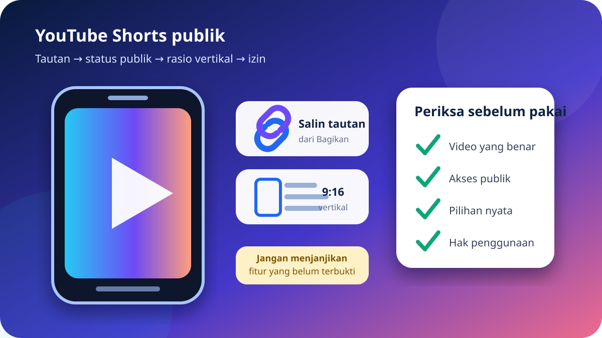

Beranda › Guides › YouTube › Shorts
Indonesia · YouTube Shorts · PanduanPanduan YouTube Shorts Publik: Tautan dan Format Vertikal
YouTube Shorts dirancang untuk ditonton cepat dalam layar vertikal, tetapi tautannya tetap perlu diperiksa sebelum digunakan. Panduan ini menjelaskan cara mengenali URL Shorts yang benar, memastikan video memang publik, menjaga rasio vertikal, dan memilih hanya opsi media yang benar-benar tersedia—tanpa menjanjikan penghapusan watermark atau fitur lain yang belum terverifikasi.

Apa yang membedakan YouTube Shorts?
Shorts adalah bentuk video pendek yang umumnya disajikan dalam antarmuka vertikal. Alamatnya sering memakai pola youtube.com/shorts/ID_VIDEO. Namun, video yang sama kadang juga dapat dibuka melalui tampilan YouTube biasa. Perbedaan alamat tersebut tidak mengubah kepemilikan konten, izin penggunaan, atau status privasinya.
Rasio yang sering digunakan adalah 9:16, tetapi jangan menganggap semua Shorts memiliki ukuran, resolusi, atau komposisi yang sama. Kreator dapat mengunggah video dengan ruang kosong, teks di tepi layar, atau materi yang sebelumnya dibuat untuk rasio lain. Alat penyimpanan tidak seharusnya menciptakan detail baru atau memperbaiki komposisi asli secara otomatis.
Karena tampilan Shorts bergerak cepat ke video berikutnya, pengguna mudah menyalin URL yang salah. Pemeriksaan sederhana sebelum memproses tautan dapat mencegah tersimpannya video yang keliru, duplikat, atau tidak lagi tersedia.
Cara memeriksa tautan YouTube Shorts publik
- Buka video asli. Masuk ke halaman Shorts yang ingin Anda periksa. Jangan menyalin alamat dari iklan, hasil pencarian, komentar, atau situs penyalin yang tidak diketahui.
- Pastikan video dapat diakses secara normal. Putar beberapa detik dan lihat nama kanal serta judulnya. Jangan mencoba melewati video privat, pembatasan akun, atau pengaturan wilayah.
- Gunakan tombol Bagikan. Tekan Bagikan, lalu pilih Salin tautan. Cara ini lebih aman daripada mengetik ulang ID video secara manual. Petunjuk resminya tersedia di YouTube Help tentang berbagi video.
- Buka URL di tab baru. Pastikan tautan mengarah ke Shorts yang sama. Periksa gambar awal, nama kanal, dan durasi agar tidak tertukar dengan video lain.
- Periksa pilihan nyata yang ditampilkan. Jika Anda memiliki izin untuk menyimpan video, tempel tautan ke alat. Jangan menyimpulkan format, resolusi, audio, atau status watermark sebelum pilihan tersebut benar-benar terlihat.
- Pilih sesuai kebutuhan perangkat. Bandingkan ukuran file dan resolusi yang tersedia. File lebih besar dapat memakai lebih banyak kuota serta ruang penyimpanan tanpa selalu memberi manfaat pada layar kecil.
- Tunggu satu proses sampai selesai. Hindari menekan tombol berkali-kali. Buka daftar unduhan browser untuk melihat apakah proses masih berjalan, selesai, atau gagal.
- Uji file hasilnya. Putar bagian awal, tengah, dan akhir. Periksa orientasi, suara, durasi, serta apakah gambar terpotong sebelum memindahkan atau membagikan file.
Memahami rasio vertikal tanpa merusak tampilan
| Hal yang diperiksa | Mengapa penting | Tindakan yang disarankan |
|---|---|---|
| Orientasi | Shorts biasanya vertikal dan cocok untuk layar ponsel. | Biarkan orientasi mengikuti sumber; jangan memutar paksa jika hasilnya sudah benar. |
| Rasio 9:16 | Rasio ini mengisi layar vertikal, tetapi bukan jaminan untuk semua video. | Periksa tampilan aktual, bukan hanya nama file atau thumbnail. |
| Teks di tepi | Tombol antarmuka dapat menutupi teks yang ditempatkan terlalu dekat sisi layar. | Jika konten milik Anda, simpan proyek asli dan gunakan area aman saat mengedit. |
| Bar hitam | Bar dapat berasal dari video sumber atau pemutar dengan rasio berbeda. | Uji pada pemutar lain sebelum mengubah atau memotong file. |
| Resolusi | Resolusi yang lebih tinggi berarti file lebih besar dan belum tentu tersedia. | Pilih hanya resolusi yang ditampilkan dan sesuai ruang perangkat. |
Masalah umum saat tautan Shorts diperiksa
Tautan membuka video berbeda
Kembali ke Shorts asli dan salin melalui tombol Bagikan. Tutup video berikutnya yang muncul otomatis sebelum menyalin agar ID tidak tertukar.
Video tidak dapat diakses
Video mungkin privat, dihapus, dibatasi, atau berubah status. Jangan mencoba melewati akses; minta pemilik membagikan versi yang memang diizinkan.
Pilihan kualitas tidak muncul
Ketersediaan bergantung pada sumber dan hasil yang dapat diproses saat itu. Muat ulang sekali dan periksa jaringan, tetapi jangan menganggap kualitas tertentu pasti ada.
File tampak horizontal
Periksa metadata rotasi dan coba pemutar bawaan lain. Jangan langsung memotong video karena masalahnya mungkin hanya cara pemutar membaca orientasi.
File tidak ditemukan
Lihat daftar unduhan browser dan folder Downloads. Beri nama yang jelas agar Shorts tidak tertukar dengan file lain.
Suara tidak terdengar
Periksa volume media, Bluetooth, kelengkapan unduhan, dan video sumber. Resolusi gambar tidak menjamin adanya audio.
Cara memilih file tanpa membuat asumsi
Informasi terpenting adalah apa yang benar-benar muncul setelah tautan diperiksa. Nama layanan, judul artikel, atau resolusi video asli tidak boleh dipakai sebagai jaminan bahwa setiap format tersedia. Bandingkan label format, resolusi, dan ukuran file. Untuk penjelasan lebih rinci, baca cara memilih kualitas MP4 video YouTube publik.
Pada koneksi seluler, pilihan dengan ukuran lebih kecil dapat lebih praktis. Pada layar besar, resolusi yang lebih tinggi mungkin membantu jika memang tersedia dari sumber. Downloader-X tidak boleh dianggap menaikkan resolusi secara buatan. Jika sumber memiliki detail terbatas, file hasilnya tidak dapat menciptakan detail baru.
Setelah file selesai, simpan dengan nama yang menyebut topik atau tanggal, bukan nama acak. Jika Anda kesulitan menemukan hasilnya, gunakan panduan mengatur file video pada Android dan iPhone. Jika proses tidak dimulai, ikuti daftar pemeriksaan ketika unduhan tidak berjalan sebelum mencoba berulang kali.
Hak cipta, privasi, dan penggunaan yang bertanggung jawab
Video yang dapat ditonton publik tetap dilindungi hak cipta kecuali pemilik menyatakan lisensi lain. Status publik berarti tautan dapat dibuka tanpa izin khusus; status itu tidak otomatis memberikan hak untuk menerbitkan ulang, menjual, menghapus kredit, membuat kompilasi, atau memakai video secara komersial.
Gunakan hanya Shorts milik sendiri, berlisensi sesuai, berada dalam domain publik, atau telah memperoleh izin yang jelas. Jika tujuan Anda adalah referensi pribadi, tetap periksa ketentuan platform dan hukum yang berlaku. Untuk proyek sekolah, bisnis, atau kanal publik, simpan bukti izin dan cantumkan atribusi bila diminta.
Jangan memasukkan kata sandi YouTube, cookie, kode OTP, atau data akun ke layanan pengunduh. Tautan publik seharusnya dapat diperiksa tanpa kredensial. Jika sebuah situs meminta login untuk membuka video privat, hentikan proses. Baca juga panduan menyalin tautan video publik dengan benar agar URL berasal dari sumber yang tepat.
FAQ
Apakah semua tautan YouTube Shorts bersifat publik?
Tidak. Shorts dapat dibuat privat, dibatasi, dihapus, atau memerlukan akses tertentu. Gunakan hanya video yang dapat dibuka secara sah tanpa mencoba melewati pengaturan akses.
Apakah panduan ini menjamin YouTube Shorts tanpa watermark?
Tidak. Kemampuan tersebut belum terverifikasi. Halaman ini hanya membahas pemeriksaan tautan publik, pilihan yang benar-benar tampil, orientasi, dan penggunaan yang bertanggung jawab.
Mengapa tautan Shorts berubah menjadi halaman video biasa?
YouTube dapat menampilkan video yang sama melalui antarmuka berbeda. Periksa ID video, judul, dan kanal untuk memastikan kontennya tetap sama.
Mengapa video vertikal memiliki bar hitam?
Rasio sumber mungkin berbeda atau pemutar menyesuaikan ruang layar. Coba pemutar lain dan periksa file asli sebelum mengedit atau memotong.
Apakah resolusi tertinggi selalu terbaik?
Tidak selalu. Pertimbangkan ukuran file, kuota, ruang penyimpanan, layar, dan pilihan yang tersedia. Resolusi lebih tinggi juga tidak menjamin audio atau kualitas yang tidak ada di sumber.
Bolehkah Shorts publik diunggah ulang?
Tidak otomatis. Status publik bukan izin penggunaan ulang. Unggah kembali hanya jika Anda pemiliknya atau memiliki lisensi serta izin yang sesuai.
Periksa Shorts publik dengan bertanggung jawab
Gunakan tautan yang Anda miliki atau diizinkan untuk digunakan, lalu pilih hanya format yang benar-benar ditampilkan oleh alat.
Buka YouTube Downloader